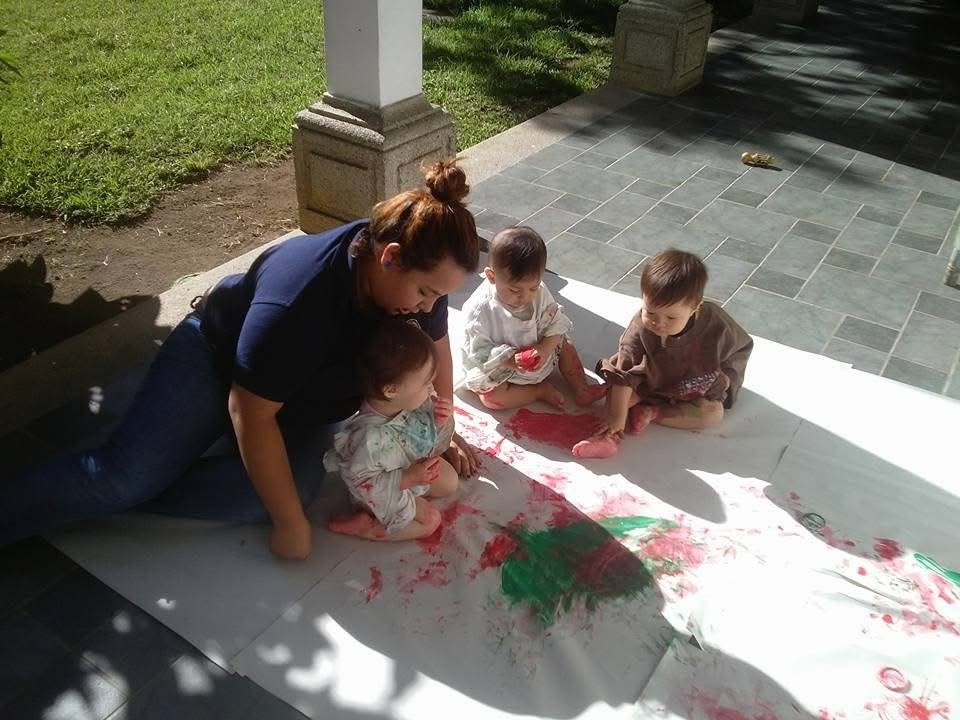

Aprender desde
lo cotidiano.
Juego, lectura y cultura: una mirada a mis experiencias con la infancia en Guatemala.
Estas fotografías reúnen momentos de mi trayectoria educativa. Al volver a mirarlas, encuentro preguntas que siguen acompañando mi formación: cómo ofrecer oportunidades para explorar, cómo escuchar a cada niño y cómo hacer de la escuela un lugar de pertenencia.
Explorar con las manos.
La pintura compartida invita a explorar texturas, colores y huellas sin exigir un producto idéntico. Desde mi mirada pedagógica actual, acompañar significa observar las iniciativas infantiles, poner palabras a lo que sucede y ofrecer posibilidades sin dirigir cada movimiento.
La revisión de Skene et al. (2022) sitúa el juego guiado entre la elección infantil y el apoyo flexible de una persona adulta. Sus resultados varían según el aprendizaje evaluado: dan una base para pensar la propuesta, sin demostrar efectos en esta experiencia concreta.
ODS 4.2 · Experiencias de aprendizaje en la primera infanciaUn rincón para imaginar.
Un espacio de lectura puede convertirse en un lugar de encuentro: mirar imágenes, anticipar una historia y conversar sobre los personajes. La cercanía de los libros importa, pero también el tiempo compartido y la escucha de las interpretaciones infantiles.
Dowdall et al. (2020) encontraron efectos positivos de intervenciones de lectura compartida sobre el lenguaje infantil. Esta evidencia invita a proponer conversaciones abiertas alrededor de los cuentos; una fotografía por sí sola no permite medir avances lingüísticos.
ODS 4 · Acceso a experiencias de lecturaLa cultura también se comparte.
La vestimenta y las celebraciones pueden abrir conversaciones sobre las historias familiares y las distintas formas de vivir en comunidad. Una educación intercultural necesita ir más allá de una jornada festiva: incorporar relatos, lenguas y voces familiares a la vida cotidiana del aula.
Las directrices de UNESCO (2006) vinculan la educación intercultural con el respeto a la identidad cultural, la participación y el entendimiento entre grupos. El punto de partida es escuchar cómo cada familia se describe a sí misma.
ODS 4.7 · Diversidad cultural y convivenciaJugar y cuidarnos.
El juego compartido ofrece ocasiones para negociar turnos, pedir ayuda y reconocer las necesidades de otras personas. En una propuesta con agua, la supervisión continua, la organización del espacio y las alternativas de participación forman parte del cuidado educativo.
UNICEF y The LEGO Foundation (2018) destacan el carácter activo y social del aprendizaje a través del juego. Desde este enfoque, el disfrute y las relaciones orientan la experiencia, sin convertir cada momento lúdico en una prueba de rendimiento.
ODS 3 y 4 · Bienestar y aprendizajeSentirse parte del grupo.
La vida del aula se construye con pequeños gestos de reconocimiento. Como propuesta pedagógica, una asamblea breve, una canción compartida o un juego cooperativo pueden abrir espacios para expresar emociones y participar sin competir por ser el primero.
Esta lectura de la imagen pone el acento en los vínculos. La participación necesita alternativas para quienes prefieren observar, requieren más tiempo o se expresan de otra manera; pertenecer no exige que todos actúen igual.
ODS 4 · Participación e inclusiónCrear oportunidades
con lo que tenemos.
En contextos donde los recursos educativos son limitados, garantizar oportunidades para la infancia exige atender tanto a los materiales como a las relaciones, la formación docente y la continuidad del acompañamiento. La creatividad puede ampliar las posibilidades del aula, pero no sustituye una financiación suficiente ni unas condiciones de trabajo dignas.
Las fotografías no permiten conocer los recursos de cada centro ni la situación económica de las familias. La reflexión que propongo es más amplia: evitar que la disponibilidad de materiales determine quién puede participar.
Como líneas de intervención, planteo organizar pequeños fondos de cuentos, compartir materiales seguros, utilizar relatos y canciones aportados por las familias y diseñar actividades que admitan distintas formas de participación. Antes de comprar, conviene definir qué experiencia queremos facilitar y qué barreras debemos resolver.
Reutilizar materiales adecuados, cuidar los libros y compartir recursos conecta esta reflexión con el consumo responsable. Las metas 4.2 y 4.7 de Naciones Unidas ofrecen un horizonte de educación temprana de calidad y reconocimiento de la diversidad cultural.
La conexión con los ODS y las fuentes es una lectura retrospectiva de estas experiencias, no una evaluación de impacto ni la afirmación de que formaran parte de un programa oficial de ODS.

Fuentes para seguir pensando.
Investigación revisada por pares y marcos internacionales que sustentan esta reflexión pedagógica.
- Skene, K., O’Farrelly, C. M., Byrne, E. M., Kirby, N., Stevens, E. C. y Ramchandani, P. G. (2022). Can guidance during play enhance children’s learning and development in educational contexts? A systematic review and meta-analysis. Child Development, 93(4), 1162–1180. Leer artículo ↗
- Dowdall, N., Melendez-Torres, G. J., Murray, L., Gardner, F., Hartford, L. y Cooper, P. J. (2020). Shared picture book reading interventions for child language development: A systematic review and meta-analysis. Child Development, 91(2), e383–e399. Leer artículo ↗
- UNICEF y The LEGO Foundation (2018). Aprendizaje a través del juego. Consultar informe ↗
- UNESCO (2006). UNESCO guidelines on intercultural education. Consultar directrices ↗
- Naciones Unidas. Objetivo 4: Educación de calidad, metas 4.2 y 4.7. Consultar metas ↗